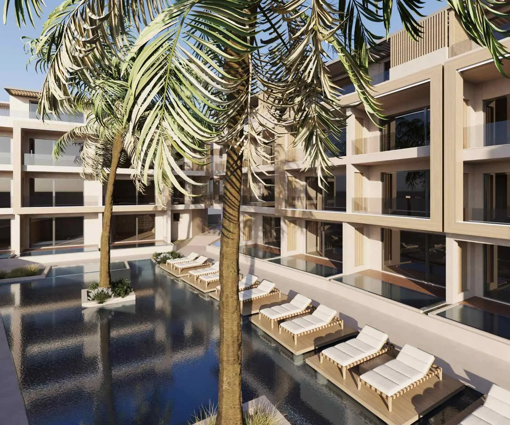
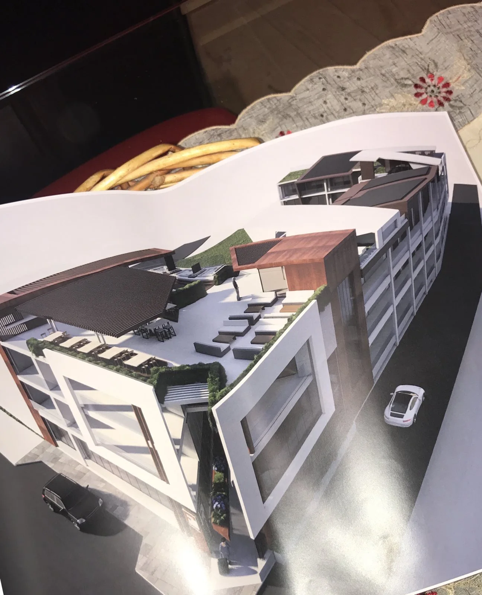
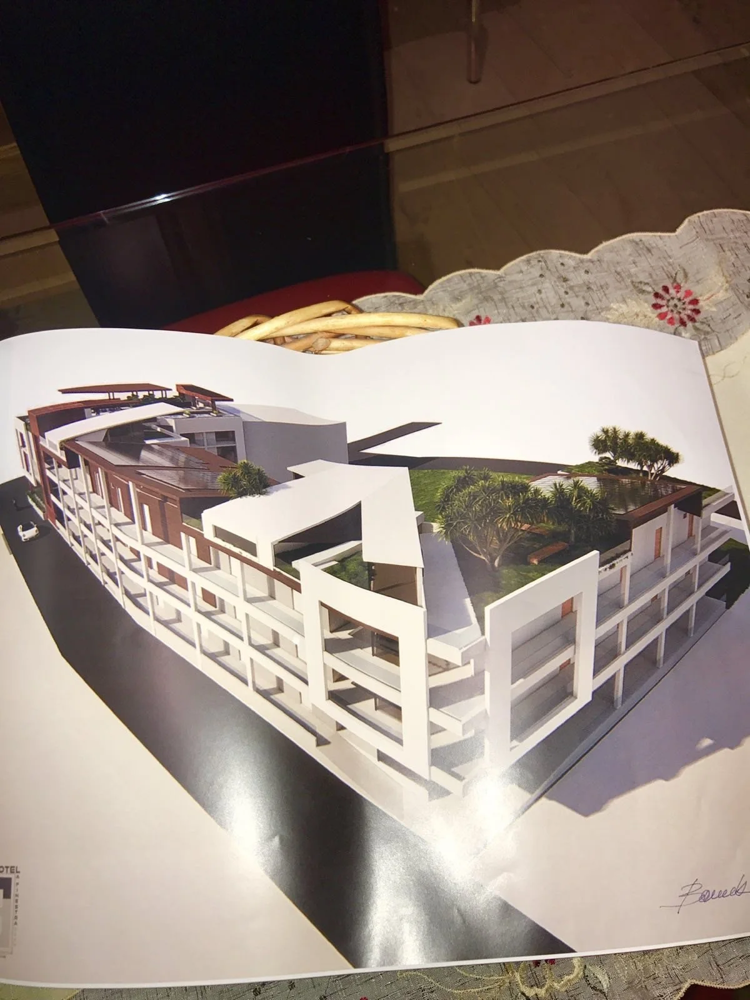

Skip to content
MI ARCHITECTS
Architecture · Construction
Home
Development
Construction
Services
Portfolio
Our Story
Contact
← All construction
Design documentation
Nidri — Design Study
03 images / Design study

View full image ↗
01
Architectural visualisation — pool courtyard

View full image ↗
02
Printed architectural study

View full image ↗
03
Printed study — building form
Next project
Poros
↗
✕
←
→